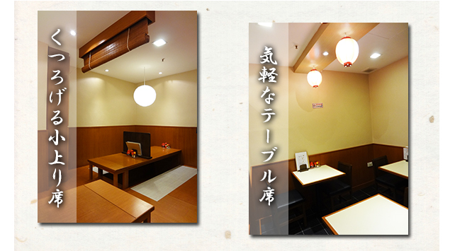

Inside the Store
Located on the basement floor of Cuppage Plaza, the restaurant has table seating, a counter and a raised area, making it suitable for banquets of around 12 people, small drinking parties or everyday dining.
We also accept orders for conference lunches. Please contact us by phone for details.
Restaurant Information
Sakana Keria (酒菜けりあ)
5 Keok Road
#B1-28 Cuppage Plaza
Singapore
Opening Hours
Monday – Sunday
6:00pm – 10:30pm
(Last Order 10:00pm)
Contact
TEL: +65 6733 0654
FAX: +65 6737 3744
Mobile (Kiyono): +65 9628 0847
Temporary closures, private parties, and changes to opening hours will be announced on Facebook.